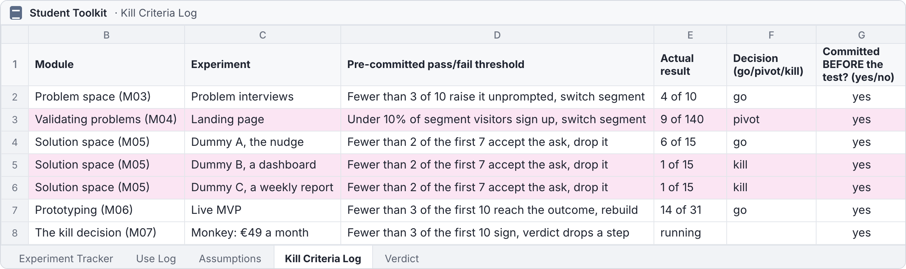

- 1Open the link
github.com/BaNburger/AmbitiousEntrepreneurship - 2Go to modules
then 07-rapid-validation - 3Click the lecture PDF
M07_Lecture_Rapid-Validation.pdf, download top right
Module 07 · Ambitious Entrepreneurship
The Kill Decision
Why should this startup die?
Course path
- 00
- 01
- 02
- 03
- 04
- 05
- 06
- 07
- 08
- 09
- 10
- 11
- 12
Course material · scan now
All slides live on GitHub
The newest version, free, no account needed
Where we are · the course
From evidence to a verdict
Thirteen sessions from first idea to first revenue. What teams have by now:
A problem people confirmed
Problem space (M03)
Problem space (M03)
A live MVP and fixes shipped
Prototyping (M06)
Prototyping (M06)
Use records against a line
Prototyping (M06)
Prototyping (M06)
Check-in · Show of hands
Go, Pivot or Kill? Your gut, right now
Hands up for your band. One click on the band per hand
Gopersevere
Pivotchange one thing
Killstop this venture
Pivot or persevere
Under your line? That is a decision, not a failure
Go means persevere. Pivot has two types. Today adds the third move, kill
Accountability
Three questions, every session
Chapter 1 of 9
Previously on Ambitious Entrepreneurship
Three pictures from earlier sessions that you need to follow today.
Previously · Kickoff (M00)
Every loop ends in a decision
Build the smallest test, measure what people do, then pivot or persevere
Previously · Prototyping (M06)
You climbed to a slice that works
Previously · your use records · made up
Did they reach the outcome, and come back?
Recruiters in the use records, bars to scale
Today's question · hands
Why should this startup die?
Chapter 2 of 9
Your presentations
Your use records next to your line, three minutes per team.
Your presentations · make it credible
Show us where you're at in 3 minutes or less!
Facts
Solution space (M05)- The outcome you promise
- What they used before
Numbers
Your Use Log- Users without help
- Reached the outcome
- Came back unprompted
Quotes
Users- Two, with roles
Images
Screenshots- The outcome screen
- One fix, before and after
Verdict: above or below your line, and what it triggered
What did you do?What did you learn?How can we help?
Input 1 of 4 · Chapter 3 of 9
List it: every way it could die
Imagine your venture dead, and turn every cause into an assumption you can check.
Input 1 of 4 · List it · three questions
Why could your venture die?
1
What turns an assumption into a hypothesis?
2
How do you find the assumptions you rely on?
3
Which of them still matter?
Assumption vs. hypothesis
A hypothesis is an assumption that can fail
Worked example · Bastian's course idea
Every idea hides assumptions. Find three
Through our contact with startup founders, we have learnt that many work in a very unstructured way. This led to the idea of an online course that teaches founders to set up internal structures on Notion.
Assumption! Do they struggle?
We have never spoken to founders about this.
Assumption! Why online?
I get paid to teach online courses. That does not mean founders want one.
Assumption! Why Notion?
We like Notion. I think everybody should use it.
The pre-mortem
Imagine your venture is dead, one year from now
Then write down why, before the market does
1
Imagine
One year from now. It is dead.
2
Write alone
Every founder lists causes, silently.
3
Translate
Each cause becomes an assumption.
4
Check
Against seven weeks of records.
Kickoff (M00) autopsied an idea · made up
Today you autopsy a venture with evidence
Your Weekly Reflection, "What's our riskiest assumption right now?"
Why startups die
Startups rarely die of one thing
% of 111 post-mortems since 2018 naming each reason, coloured by area
Translate · made up
Every cause of death is an assumption
About the customer, the solution or the business
CUSTOMER
Cause: "Nobody pays"
Assumption: Recruiters pay €49 a month for a nudge
SOLUTION
Cause: "They stop using it"
Assumption: A nudge a day keeps finalists from going quiet
BUSINESS
Cause: "We can't reach them"
Assumption: Recruiter groups bring us customers
Check · made up
Keep only what your records have not ruled out
Recruiters want to know when a finalist goes quiet
"An hour, not a week", heard in 9 demos
They use the nudge without help
Use Log, 14 of 31 reached the outcome alone
?
Recruiters pay €49 a month, every month
One deposit, Solution space (M05)
?
We reach recruiters through their groups
Traffic Sources, 9 of 140 signed up
?
Finalists answer a WhatsApp nudge
No artifact

Now you · alone · 3 minutes
Write your obituary
Output
Three assumptions per founder
Input 1 of 4 · List it · the answers
List it: every cause of death is an assumption
1
What turns an assumption into a hypothesis?
It can fail. A hypothesis is an assumption you can prove wrong
2
How do you find the assumptions you rely on?
Imagine your venture dead in a year and write down why
3
Which of them still matter?
Only those your records have not ruled out yet
Input 2 of 4 · Chapter 4 of 9
Rank it: the monkey first
Sort what is left by critical and known, and test the critical unknown first.
Input 2 of 4 · Rank it · three questions
Which assumption do you test first?
1
Which assumption goes first?
2
How do you write it down?
3
How do you test it?
Let's say you're trying to teach a monkey how to recite Shakespeare while on a pedestal.
Monkey first
Train the monkey, skip the pedestal
The monkey is the critical unknown. If it is false, nothing else matters
Hypothesis mapping
Critical and unknown goes first
Map it · made up
Known means an artifact shows it
Two critical unknowns. The first is the monkey
Formulate · made up
Write it so it can fail
Specific, testable, actionable
WE BELIEVE THATRecruiters who used the nudge pay €49 a month for it, every month
TO VERIFY, WE WILLEach of us asks 10 of them to sign a €49-a-month pre-order
WE'RE RIGHT IFAt least 3 of the first 10 sign by the First users (M08) check-in
DECISIONIf not, our verdict drops one step
How-to · AI as a translator
Let AI turn feedback into hypotheses
Feedback · made up
Prompt Convert this user feedback into assumptions, then each into a testable hypothesis with a number.
"As a new founder, I often find myself overwhelmed by the sheer amount of tasks and decisions."
"A practical course which teach on using Notion to set up internal structures would be a game-changer for us."
"Limited time hinder us to focus on organizing and structuring our teams effectively."
Answer · assumption, then hypothesis
Founders struggle to structure their work.
At least 3 of 10 founders we interview describe a recent dropped task or missed handover without being asked.
Founders want a practical Notion course.
At least 2 of 10 founders who see the course page book a paid seat within a week.
Founders have little time.
At least half of those who start finish the first lesson within 7 days.
Test cheaply
Pick the cheapest test that could prove it wrong
Cheaper is better, as long as it could kill the monkey
🚪FAKE DOOR
A button for what doesn't exist yet. Count the clicks.
Quantitative evidence🎭BEHIND THE SCREEN
The interface is real. You do the work by hand.
Functional prototype🤝CONCIERGE
No product. You deliver the outcome by hand.
Paid if they pay💶THE ASK
A signed pre-order is signal. A payment validates.
Paid prototype once paid
Rung six
Will they pay? Then ask for money
Write the line first · the homework default
Log the line before the first result
If fewer than 3 of the first 10 people from our segment do what our monkey assumes by the Module 08 check-in, it is false. A Go becomes a Pivot, a Pivot a Kill, and a restart picks a new offer.
3of the first 10
Now you · team · 3 minutes · don't overdo it
Map your assumptions. Circle the monkey
Output
One monkey per team
Input 2 of 4 · Rank it · the answers
Rank it: train the monkey, skip the pedestal
1
Which assumption goes first?
The monkey: critical and unknown. If it is false, nothing else matters
2
How do you write it down?
So it can fail: specific, testable, actionable, with its line logged first
3
How do you test it?
With the cheapest test that could prove it wrong. Will they pay? Ask for money
Input 3 of 4 · Chapter 5 of 9
Judge it: your past self decides
Let the lines you wrote decide first, then score the rest on artifacts.
Input 3 of 4 · Judge it · three questions
Who decides your verdict?
1
What decides first?
2
What decides the rest?
3
How final is the verdict?
Accountable decisions · made up
Every decision should be accountable
Tinted rows crossed their line. The team did what it said

Kill signals [are] metrics that a team agrees on when the project starts.
Decide · step 1
Your Kill Criteria Log decides first
The scorecard only scores what the log leaves open
Decide · step 2
Score nine questions on artifacts
No artifact scores 0. That is a finding, not a missed week
Worked example · made up
14 of 18. A Go, at the edge
No open line crossed, so the score decides. One deposit is not yet a business
Now you · pairs · 3 minutes
Score two questions on your own artifacts
Output
Two scores, each with its artifact
Pivoting · re-shown from Solution space (M05)
Type 1: another solution to the same problem
Solution or traction weak, problem strong
Pivoting · re-shown from Solution space (M05)
Type 2: back to the problem space
Problem weak
The Go question
Will this be your office in 3 to 5 years?
A Go is more than a score. Do you want to build this for years?
Decide · step 3
Today's verdict is provisional
Announce it out loud, then let the monkey test confirm it
Quick ask · hands
Which line in your log did you cross?
Input 3 of 4 · Judge it · the answers
Judge it: the log first, then the scorecard
1
What decides first?
Your Kill Criteria Log, the lines you wrote before the data
2
What decides the rest?
Nine questions, scored on artifacts. No artifact scores 0
3
How final is the verdict?
Provisional. Say it out loud, then let the monkey test confirm it
Input 4 of 4 · Chapter 6 of 9
Close it: kill well, then restart
Write down what the evidence said, then restart from your own records.
Input 4 of 4 · Close it · three questions
How do you kill well?
1
Why is a kill so hard?
2
How do you kill well?
3
What comes after a kill?
We have bonused every single person on teams that ended their projects.
Escalation of commitment
The more it is yours, the harder you hold on
Average R&D money put back into a course of action, 240 business students
The Kill Ritual
One page turns a kill into an asset
A rigorously argued kill can earn an A in this course
Worked example · made up
Kill what fell under its line
![Two windows side by side. Left, the Kill Criteria Log sheet of the Student Toolkit with the columns experiment, pre-committed pass or fail threshold, actual result, decision and committed before the test. Row 2, click dummy A, the morning alert, fewer than 2 of the first 7 accept the ask, drop it, 3 of the first 7 accepted, go, yes. Row 3, click dummy B, the dashboard, the same line, 0 of the first 7, 1 of 15 in all, kill, yes, tinted and ringed. An arrow leads from it to the right window, a shared document titled Kill page, click dummy B, the dashboard, with four lines: evidence, line crossed, surprise and next founder](media/m07-kill-page.png) KILLED
KILLED
Now you · alone · 2 minutes
Write one surprise
Output
One surprise per founder
Restart
Killed? Restart from your own records
Seven weeks produced problems, segments and channels. Use them
Exemplar · made up
The kill was not the end of the company
Go, Pivot or Kill,
€everyone asks for money
Go and Pivot teams sell what the verdict kept.
Killed teams sell the concierge version.
Input 4 of 4 · Close it · the answers
Close it: a kill is an asset
1
Why is a kill so hard?
The more it is yours, the harder you hold on
2
How do you kill well?
With the Kill Ritual, one page on what the evidence said
3
What comes after a kill?
A restart from your own records: problems, segments, channels
Chapter 7 of 9
Wrap-up and check-out
Two pictures to keep, three questions to reflect on, and your week.
Recap · today
Test the critical unknown first
Recap · rungs five and six
From today you test at the wallet line
Reflection 1 of 3 · the content
What could you apply?
🛠️
What could you apply?
🤕
What gave you a hard time?
Reflection 2 of 3 · the process
Man vs. machine
🤖
Where did AI actually help you?
🧠
Where was your genius needed?
🕴️
What are your best hacks to share?
Reflection 3 of 3 · the results
Rose, thorn, bud
🌹
What was the breakthrough today?
🌵
What was the hardest part today?
🌱
What is an idea/feature you didn't have time to finish, but want to explore later?
Test your monkey with 10 people per student from your segment against a line logged first, decide Go, Pivot or Kill on your Kill Criteria Log and scorecard, and bring the verdict and your next offer to the Module 08 check-in.
10people each
The learning floor is the scored verdict and the offer per team and 5 such people per student.
Your line. Fewer than 3 of the first 10 do what your monkey assumes, and the verdict drops one step.
Homework · how to do it
Test the monkey first
1
Write the obituary. Beside your Weekly Reflection. Each cause becomes an assumption.
2
Find the monkey. Critical and unknown, never a pedestal.
3
Decide. Crossed lines in your log first, the scorecard the rest.
4
Run the cheapest test that could prove the monkey wrong, people from your records first.
!
Watch out. "Would you pay?" is not a test. A signed pre-order is.
5
Killing? Write the Kill Ritual page. Restart from your records with a concierge offer, the outcome by hand.
6
Ask AI twice, for assumptions from raw notes and a blind read of results. Remove hypothesis and names.
7
Midweek. Behind? Look elsewhere. Crossed? Step down now.
Homework · what you come back with
Good is tested, decided and priced
GOOD
WEAK
Monkey test
22 recruiters asked for a €49-a-month pre-order, 7 signed
3 friends said they'd pay
Verdict
Go, confirmed against its line
"Still deciding"
Offer
€49 a month, 14 named recruiters
"Launch on Product Hunt"
References · 1 of 2
Sources in this deck
- Bland, D. J., & Osterwalder, A. (2019). Testing business ideas. Wiley. Test card format, not opened, as in Validating problems (M04).
- CB Insights (2021, August 3). The top 12 reasons startups fail. cbinsights.com.
- Klein, G. (2007). Performing a project premortem. Harvard Business Review, September 2007.
- Ries, E. (2011). The Lean Startup. Crown Business. Excerpt: Pivot or persevere? Entrepreneur, 13 September 2011.
References · 2 of 2
Sources in this deck
- Staw, B. M. (1976). Knee-deep in the big muddy. Organizational Behavior and Human Performance, 16(1), 27 to 44.
- Teller, A. (2016, February). The unexpected benefit of celebrating failure. TED2016.
- Teller, A. (2016, July 23). The moonshot factory operating manual. X blog.
- Teller, A. (2016, December 7). Tackle the monkey first. X blog.
- Course material: Glossary, Grading Rubric, frameworks 02 and 03, the A-grade kill autopsy exemplar (made up).
See you next time!
Module 07 · The Kill Decision · Workshop · 90 minutes
Workshop: Kill your darlings
Find out why this startup should die, from your records and the lines you wrote.
Workshop · the map for step 2
Critical and unknown goes first
Workshop · the scorecard for step 3
Score nine questions on artifacts
Your Kill Criteria Log decides first. No artifact scores 0
Workshop · step 1 of 3
Write the obituary
1STEP 1 · 20 MIN
WRITE THE OBITUARY
Find what can still kill your venture
- One year from now, it's dead. Causes, alone
- Add the Weekly Reflection's riskiest assumptions since Kickoff (M00)
- Turn each cause into a customer, solution or business assumption
- Check each against your records. Ruled out or standing?
Output Standing assumptions, each with its evidenceMinutes 20
Workshop · step 2 of 3
Find the monkey
2STEP 2 · 25 MIN
FIND THE MONKEY
The assumption that kills you if false, and a cheap test
- Map them on critical and known. Known means an artifact
- Pick the monkey, the critical unknown, never a pedestal
- Cheapest test that could prove it wrong. Fake door, by hand, a pre-order
- Name the people, first buyers and Use Log first
Output The monkey, its test, the peopleMinutes 25
Workshop · step 3 of 3
Decide, then commit
3STEP 3 · 45 MIN
DECIDE, THEN COMMIT
A verdict on criteria set before, and a week that tests it
- Read your Kill Criteria Log. A crossed line decides
- Score the rest, 0 to 2 per question, each with its artifact
- Get challenged by a team, or by a blind AI read
- Announce the verdict, provisional. Kill Ritual for what it drops
- Log the monkey line, commit, send the first asks
Output A provisional verdict, a kill page, a dated line, first asks sentMinutes 45
Arrived empty-handed?
Score what you have
No MVP or Use Log? Score what you have, 4 and 8 score zero. Your monkey is use without help.
Test your monkey with 10 people per student from your segment against a line logged first, decide Go, Pivot or Kill on your Kill Criteria Log and scorecard, and bring the verdict and your next offer to the Module 08 check-in.
10people each
The learning floor is the scored verdict and the offer per team and 5 such people per student.
Your line. Fewer than 3 of the first 10 do what your monkey assumes, and the verdict drops one step.
See you next time!
Module 07 · The Kill Decision · Case discussion · about 90 minutes
Case discussion: 6Wunderkinder
Stand with Christian Reber in Berlin in summer 2012 and decide on Wunderkit, Wunderlist or keeping both.
Case · 6Wunderkinder GmbH, Berlin, summer 2012 · vote 1 of 2
Focus on Wunderkit, focus on Wunderlist, or keep balancing both?
Option 1
Focus on Wunderkit
Option 2
Focus on Wunderlist
Option 3
Keep balancing both
Case · what happened until August 2012
Two years, two products, one team
Case · the obituary · 15 minutes
It is summer 2013 and Wunderkit is dead. Why?
Write each cause as an assumption
Case · the monkey · 15 minutes
What was critical and still unknown?
Case · Exhibit 3 · 20 minutes
What line should have been logged on 1 February?
Then score Wunderkit. Mark "not disclosed" apart from "the evidence says no"
Case · options as verdicts · 15 minutes
Which verdict is each option?
Case · vote 2 of 2
Same question. Who moved, and why?
Option 1
Focus on Wunderkit
Option 2
Focus on Wunderlist
Option 3
Keep balancing both
See you next time!